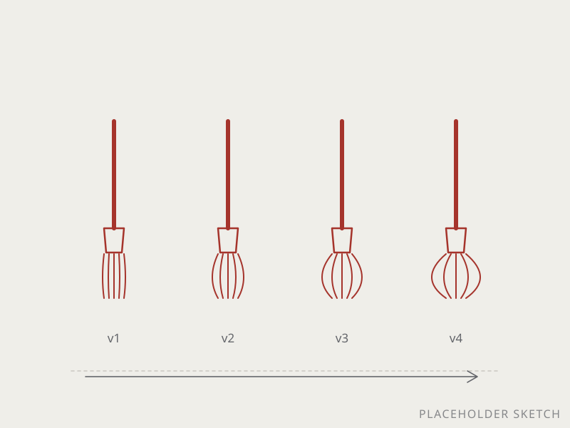

O2024 –
ORCADEOral Cancer Diagnostic Evaluator — a brush that has to collect a genome without cutting anyone
- Bioengineering
- Product design
- Clinical need
- Entrepreneurship
Finding oral cancer early currently involves a scalpel, so people put it off. ORCADE is a brush instead — a geometry problem: bristle stiffness, density, how hard you can press before it stops being non-invasive. Printed, tested, reprinted until the yield doubled. Validated from cell culture to human clinical protocol; provisional patent filed.
- 550 ngDNA per sample
- 1.92Purity
- 2×Yield vs. current tools
Where it went
- "Most Likely to Problem Solve in Style" — Rice Bioengineering capstone award
- Rice Launchpad program

the one on the left was a disaster